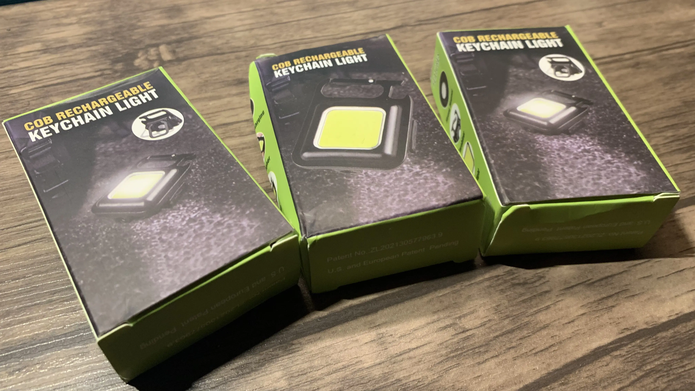
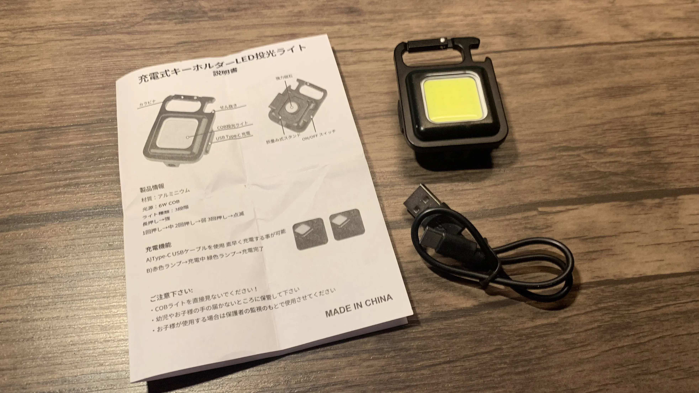
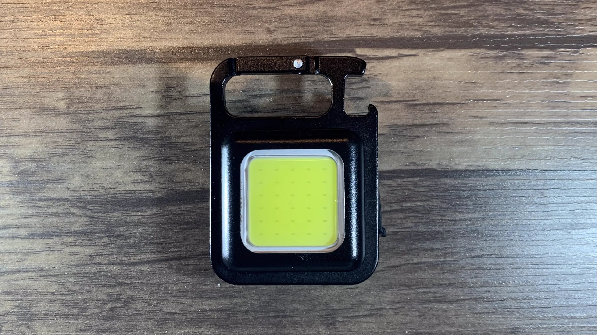
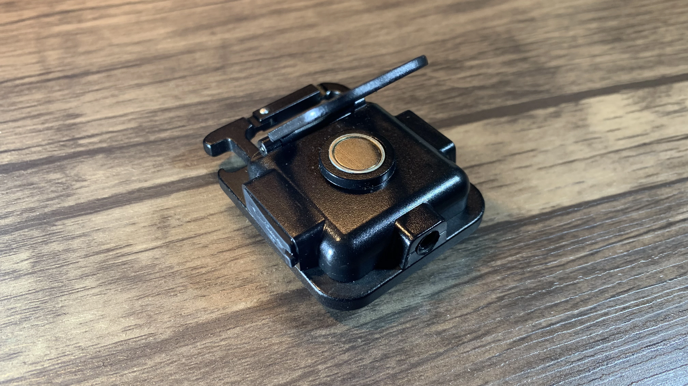
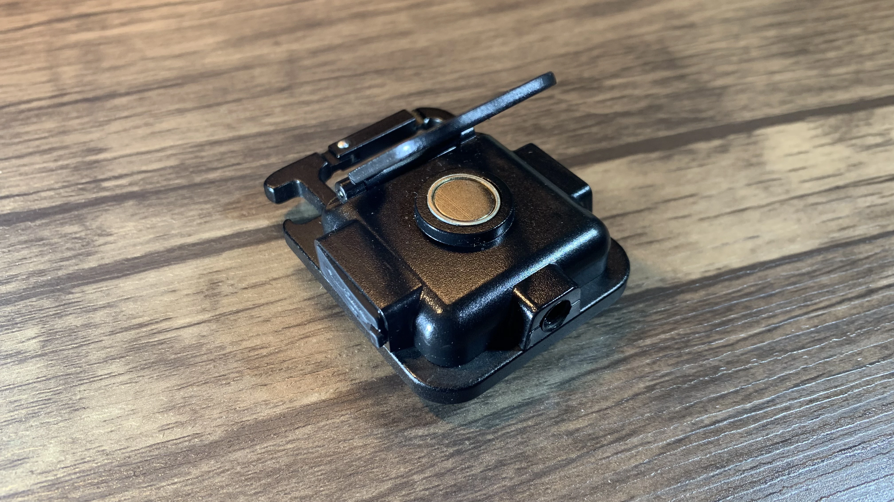
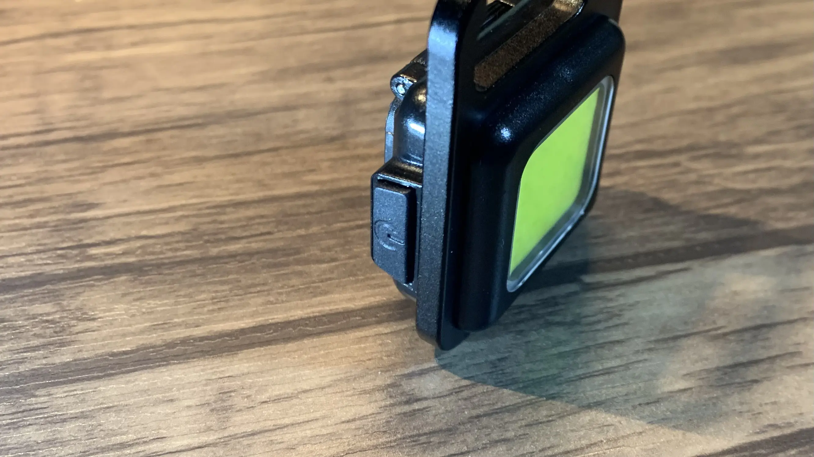
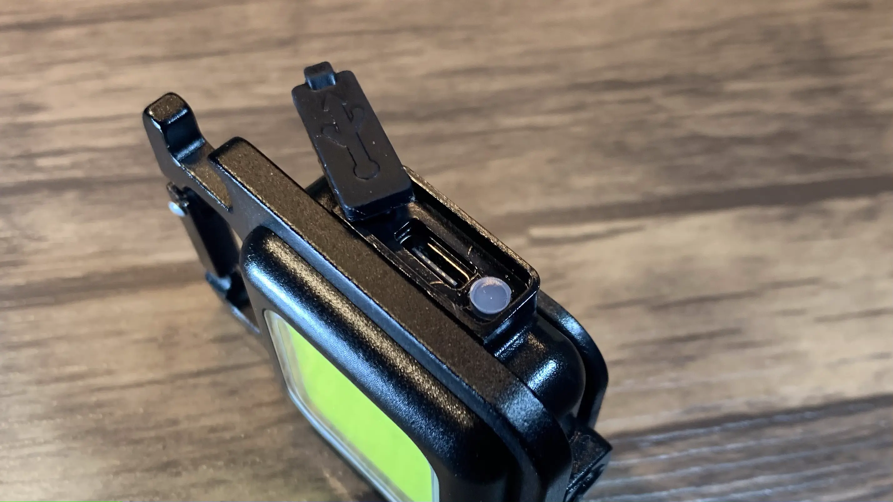
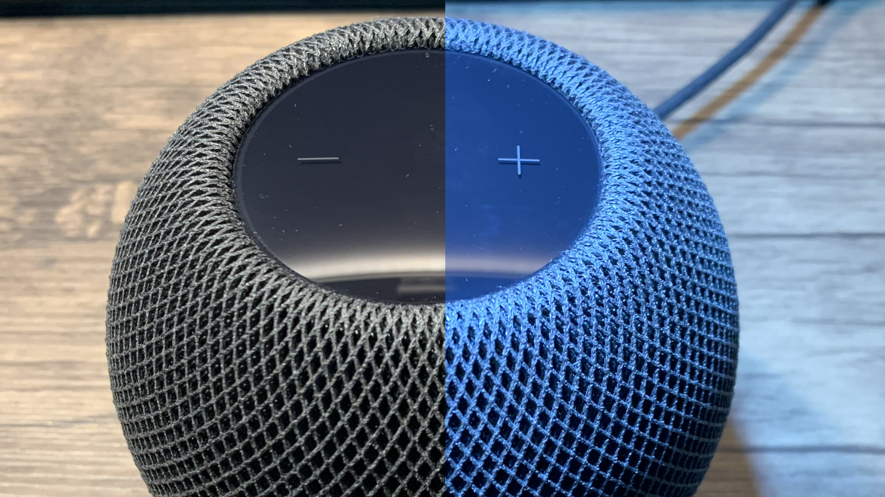

Amazonで見つけた
Amazonにこの商品がありました。
お値段なんと1つ350円！安っ！
ただ中国からの発送でお届けまでは2週間程度かかる模様。少し面白そうということで3個買いました。
3個買ったのでもし変な部分があっても外れ個体なのか、普通なのか見分けれます。
無事に届いた
この小さな箱たちが海の向こう側の中国から届いただけで感激。ただ箱はボロボロです。
開封

小さな箱を開けると、本体と長さ10cmほどのUSB-A to Cの充電ケーブルと英語/中国語/韓国語/日本語が書かれた説明書が入っていました。
地球環境に配慮しているのか無駄な梱包は一切ありませんでした！！素晴らしい(?)
外観
本体の外観を見ていきましょう
まずは正面部分。2.5cmほどのライトがあり、ライトの表面は透明な何かでがっちりと守られています。周りは質の悪い金属で覆われています。意外にも耐久性は高そうです。 ライトの部分の黄色はダサいですね。
 

次は裏側。裏の真ん中にはマグネットが付いています。そして角度をつけて自立できるようにスタンドみたいなものが付いています。
ただこのスタンドは質の悪いプラスチックでできていて、力の加減をミスったらすぐに壊れそうです。
上の部分にはフックが付いています。金属なのでさっきのスタンドとは違い、これは信用できる強度があります。
正面から見て左側、背面から見て右側には電源ボタンが付いています。クリック感は結構いい感じ。

正面から見て右側、背面から見て左側には充電口があります。なんと皆さん大好きなUSB-Cです！
この蓋がなかなか邪魔
下の部分には三脚穴があります。ただこれプラスチックに穴があけられている感じで、しっかりとはつけれないです。まぁ本体は軽いので大丈夫っちゃ大丈夫だけど。
明るさ
ライトなので明るさ大事です。

上の写真は左の明るさの時にAEロックをして、右でライトを上から15cm離してつけたものです。
あまりわからないかもしれませんが滅茶苦茶明るくなっています。小さいものの物撮りには使えますね。
3段階の光り方があって、MAX、少し弱め、高速点滅があります。MAXで光らせて少し経ってから切り替えると次のモードにいかないで消灯します。消すときに毎回点滅を味わうってことがないからこれ便利
写真は用意できませんでしたが、夜に外で使ったり、家の位部屋で使っても滅茶苦茶明るくなります。犬の散歩やキャンプや非常事態時にも使えそう。
AEロックをせずに適した明るさに調整された画像の比較がこれです。比較写真が悪くてノイズの差、、、わかりずれぇ！！(謝罪)
重大な問題

この二枚に重大な問題があります。1枚目の画像でAEロックをしています。そして1枚目を撮ってから2分後を写したのが2枚目です。はい、明るさが減っていますね。
どうやら2分ほどかけて明るさが3段階のうちの2段階目の少し暗い明るさに下がってしまうようです。買った3個とも同じでした。
ただ消してもう一度つけると明るさは元に戻ります。
結構なイマイチポイントです。
最後にまとめ
良い所
・安い
・明るい
・三脚穴がついている
・マグネットが付いている
・フックが付いている
・USB-Cでの充電
悪い所
・三脚穴が雑な加工
・明るさが2分かけて1段階落ちる
・充電が遅い
・配送が遅い
気になる人は買ってみてください。Amazonで購入はこちら